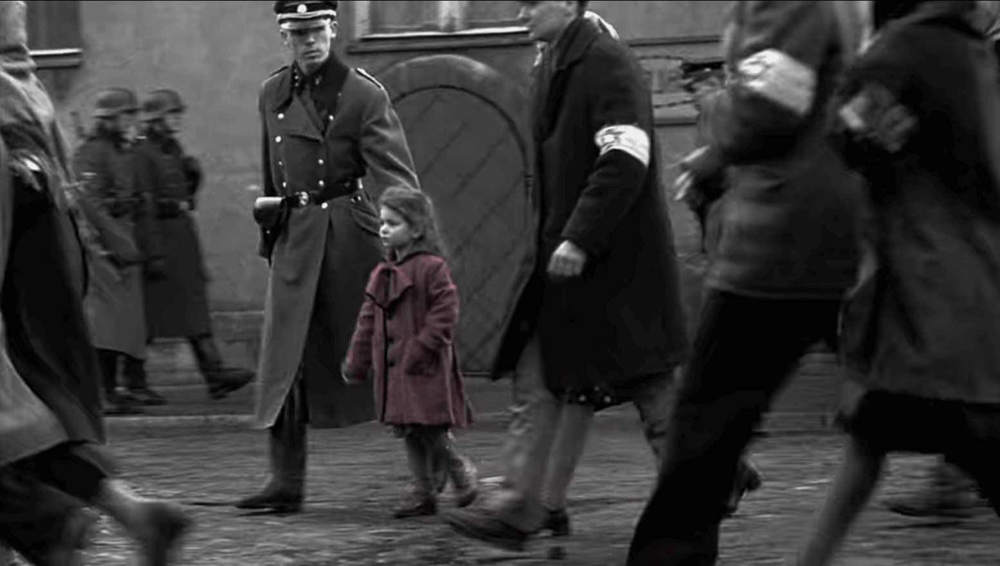

Short summary
Schindler's List is the real story of Nazi Czech businessman Oskar Schindler, who employs Jewish workers to operate a factory in occupied Poland.
As World War II progresses and the tragedy of the Jews becomes clearer, Schindler's motivation change from profit to human sympathy, letting him to save over 1100 Jews from the gas chambers using his own wealth that enough for pursuing a luxury life.
Major Awards
66th Academy Awards
- Best Picture
- Steven Spielberg
- Gerald R. Molen
- Branko Lustig
- Best Director
- Steven Spielberg
- Best Adapted Screenplay
- Steven Zaillian
- Best Original Score
- John Williams
- Best Film Editing
- Michael Kahn
- Best Cinematography
- Janusz Kamiński
- Best Art Direction
- Ewa Braun
- Allan Starski
Reviews
Its images of horror and its message of hope -- recounting the Talmudic verse "whoever saves one life saves the world entire" -- should not and will not be forgotten.
A near-documentary, brilliantly designed and choreographed, [and] a character study in which Ralph Fiennes, the winningly urbane Liam Neeson, and the magnificently impassive Ben Kingsley attain a memorable dramatic intensity.
Everyone in this movie has his or her humanity; no one is a symbol or a stereotype.
There is nothing to dislike in this film. It is one of the most emotive films I have ever seen and tells a story that is astonishingly important. Nothing is inappropriate to the telling of the story but it is horrifying to think that we are capable of such acts against other humans, but profoundly inspiring that we are capable of such bravery and kindness too.